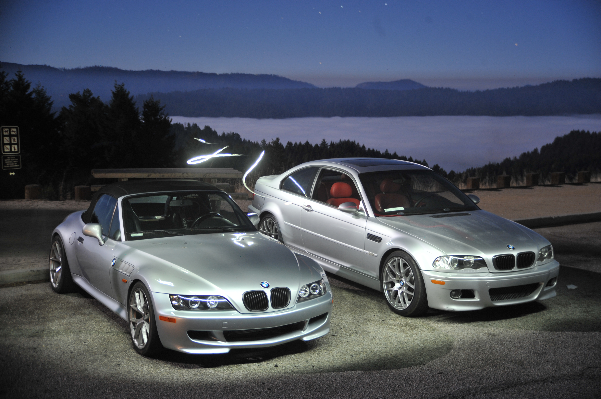

Two S54 machines, Route 9, CA
Starting with a 1999 BMW Z3 2.3 convertible, I did all of the modifications to convert it into an S54-powered track car.
Mechanical Engineer | Developer | Designer
Starting with a 1999 BMW Z3 2.3 convertible, I did all of the modifications to convert it into an S54-powered track car.
I purchased the car for $4500 from an elderly woman in Stockton, California. It had 137,000 miles on the chassis and a 2.3L M52TU engine paired with a Getrag 5 speed manual transmission. The first modifications made to the car were a new set of wheels, 18x8.5 in the front and 18x9.5 in the rear.
After being sent home from university during the pandemic, I addressed some critical issues in the rear of the Z3's chassis, known to arise after prolonged spirited driving. The primary design flaw present in the rear of the chassis is due to the older, E30 style, rear semi-trailing arm suspension design being used in a vehicle with more power and more grip. The rubber bushings holding the rear subframe to the chassis wear and allow for rotational movement along the axis of the driveshaft, in turn putting strain on the single differential mount, held to the trunk floor with several spot welds and presumably hopes and dreams. After enough fatigue from heavy acceleration and braking, the welds fatigue, fracture, and the entire rear differential mount rips free from the trunk floor, leading to a miserable clunk.
There are several solutions, however, knowing my intentions for this car were exclusively spirited driving and track time, I chose to design a weld-in solution that would be strong enough to withstand all that would be demanded from the car. This consists of a new chromoly steel differential mount, made from a 4"x4" 10-gauge steel square structural member, with 1"x2" and 0.75"x1" chromoly reinforcements triangulated in the direction of highest load on acceleration. The design was verified using SolidWorks Simulation, and the new differential mount was fabricated outside the car before being welded to the chassis and trunk floor using plug welded gussets. The installation was completed using etching primer, seam sealer, and two component automotive paint, sealing the retrofit from the elements.
Polyurethane bushings throughout the rear eliminated the issue of subframe deflection, and new Feal 441 coilovers gave the car a new outlook on cornering and stability. After these modifications I promptly ran out of cash and returned to university in Colorado.
I returned for the summer of 2022 with renewed motivation, this time to abandon the original drivetrain in pursuit of more power. Being financially limited as a broke university student, I chose the route of a junkyard M54B30 from a 2002 pre-facelift 330i that I was able to buy for $300. A few hundred more on refurbishment supplies later, the new engine was re-sealed and mounted in the car with a new clutch but the same Getrag 5 speed transmission. What followed was a series of increasingly inconsequential decisions about how to adapt certain systems of the vehicle from a chassis designed for an M52TU to an engine that was very much M54. I learned, in excruciating detail, the subtle differences between both platforms, and became increasingly certain that the Z3 was just made from scraps laying around the BMW factory in Spartanburg. The throttle is an example emblematic of these nuanced discrepancies; the Z3 chassis was designed in a time of cable throttle, when a physical steel cable would connect the pedal directly to the throttle body, while the M54 hails from a time of drive by wire throttle, where both the electronically actuated throttle body and potentiometer on the pedal connect to the DME. Similar adaptations and modifications were strewn throughout the drivetrain, and made up most of the work, and most of the opportunities for custom bracketry and engineering solutions.
By the end of the summer, I had a fully functional Z3 3.0 equivalent, complete with a custom intake system, exhaust manifold, catch can, and tuned to run the better-flowing M50 intake manifold. Theoretical power was between 230-250 HP, however this powerplant would meet its demise before I could test that theory.
My M54B30 finally met its limit during the twilight laps of a long day of sessions at Laguna Seca. I had seen flickers of red on the dash during hard cornering as the oil sloshed across my unbaffled oil pan, but I had dismissed it as a non-issue due to the brevity of the warning light. As I was lifting off while passing the sound booth I heard some unfortunate noises, presumably coming from my crankcase, and made the decision to just keep on it and send it back to the pits. Not even 400 feet later, the noises intensified and concluded in a large clunk that locked my rear wheels mid-way up the hill to the corkscrew. I quickly put in the clutch and coasted off track. The motor had seized completely, but stayed intact, no oil and rod pieces out on track, no reprimanding from the track manager, but a total loss for my junkyard B30. As I towed the car home, I promised myself to not let it rot in the garage, and that I would be back for revenge next year.
I started plotting my revenge while sitting in the tow truck at Laguna, but needed some cash to make it happen. So I worked overtime, 12 hour days, one extra per week, for two months until I had enough to make it happen. Step one was to find the replacement motor, I was done messing with junkyard engines, and for a naturally aspirated track build Z3, there seemed to be a clear right choice. I flew back to the bay and drove two hours north with Ethan to Clearlake, a sleepy town northeast of Santa Rosa, to pull my new motor. The motor in question, an S54B32, my M54's older, sportier cousin. 100 extra HP, individual throttle bodies, and most importantly an oiling system designed for track driving, with a baffled pan and two oil pickups. The donor car, a 2004 BMW M3, convertible, SMG, dove leather, silver paint, "S54 shipping container spec" according to Ethan. The owner of the car, a charismatic, middle aged high school teacher, had ambitions of EV swapping the car. I had no idea why someone would want to discard the most integral part of the E46M3's excellent driving experience in favor of a cold, torqey EV drivetrain, but to each their own. One long day of toil in the low January sun later, we were driving home with a new-to-me motor.

I returned to work on the car every month, mounting the drivetrain, adapting systems, similar to when I did the original swap, but with much more experience and understanding. Original S54 Z3 parts, made for the 2001 and 2002 model year Z3M model, are rare and expensive. So, to reduce the cost of the swap I chose to adapt parts such as those for the cooling system to work with my M54B30 chassis. I built a custom 304 stainless steel exhaust, constructed from 2 individual 2.5-inch tubes, two mufflers, resonators, and vband clamps. designed and fabricated mounts for an oil cooler, built an intake system, and simplified the wiring.
One of the most interesting parts of the process was modifying the original DME program file to allow me to run the motor with minimal safety systems. I disabled several systems within the program to simplify the operation of the vehicle: - Secondary air injection system, a pump designed to slow the warming of the catalytic converters by injecting cool air into the exhaust during startup - Secondary O2 sensors - EWS Immobilizer system

Shortly after finishing V1.0 of the exhaust, I realized that it was far too loud, specifically for the sound regulations at Laguna. I added an additional muffler and mounted the system more securely to the transmission and rear subframe using custom exhaust mounts.


I created an IoT enabled smart outlet that measures temperature and humidity to control an in-window AC unit.


For my main system architecture I used a WiFi enabled ESP32 module, allowing me to adjust requested temperature, monitor the status of my room and AC unit, and manually control the unit from anywhere via a mobile app. For temperature and humidity monitoring, I used the incredibly common DHT11 sensor, which was easy to power using 5V and easy to read using my ESP module.
For the power supply circuitry, I started with a circuit I pulled from an off the shelf switched outlet. This unit already had a transformerless power supply, consisting of an MB6F full bridge rectifier to convert the 120VAC to around 24VDC, a HM7110 3.3V voltage regulator to supply power to the small microcontroller onboard, A relay linked to a S8050 J3Y NPN transistor, and a few passives and diodes to tie it all together. I began by mapping out the circuit and grabbing datasheets for the main components. I quickly realized that the transformerless power supply design is fundamentally suited for ultra low current draw equipment, and that the ESP32, that regularly pulls over 300mA during WiFi activities, was ill-suited for this type of power supply, which would brown out and cause the ESP32 to reset every time a WiFi command was executed.


I decided to scrap the idea of just piggybacking off the existing power circuitry, and added a small 5V switching supply pulled from a phone charger, plenty capable of providing up to 1000mA at 5V, more than the ESP32 module could ever pull. For safety I completely desoldered the existing transformerless supply, and kept only the LEDs, pushbutton, and relay on the main board, desoldering the existing microcontroller and connecting the ESP32 to traces leading to the remaining components. I chose to place the raw module, insulated with heat shrink tubing, in its own compartment, with physical barriers isolating it from the high voltage circuitry and small jumper wires connecting the two boards and the small switching power supply to the ESP32.
The housing was modeled in SolidWorks, printed in two parts with a standard FDM 3D printer in black ABS. The components are held in using two small screws and a compliant mechanism, and the case was fused together using solvent welding with cyclohexanone. The pushbutton cover was taken from the off-the-shelf smart outlet unit, and features a clear window to view the LED indicators, and a satisfying click when pressing the pushbutton. The temperature/humidity sensor is lodged in place via a compliant mechanism.


I made a robotically controlled Zen garden style sand table, also known as a Sisyphus table, that uses a robotic gantry attached to a magnet to pull a steel ball bearing through a thin layer of sand.
A partner and I built all aspects of this project from scratch, including: designing a custom PCB to utilize stepper motor controllers, power circuitry, and an AVR microcontroller. Programming the board from scratch in embedded C and flashing using AVRdude, writing several custom libraries to control each subsystem. Designing and manufacturing the polar coordinate gantry, running my own CNC programs to manufacture a set of custom parts and to modify off-the-shelf ones. And finally, doing some woodworking, wood CNC, laser scoring, and additive manufacturing to create the cylindrical housing.